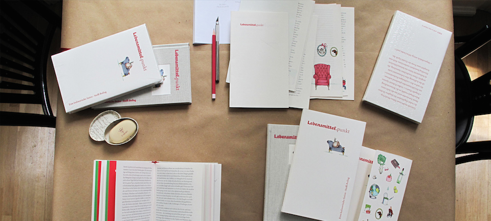
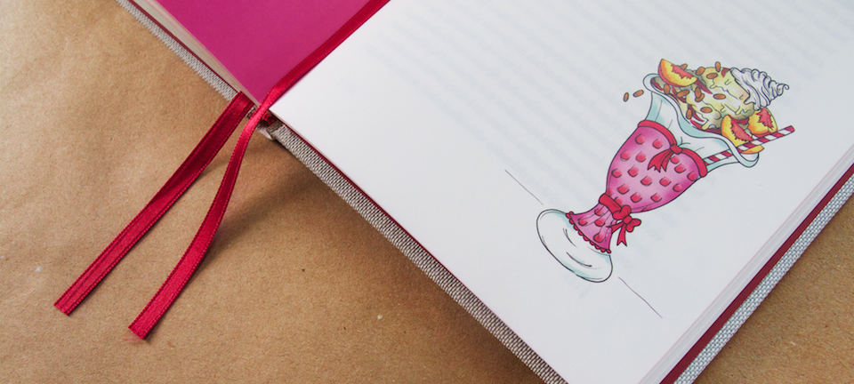
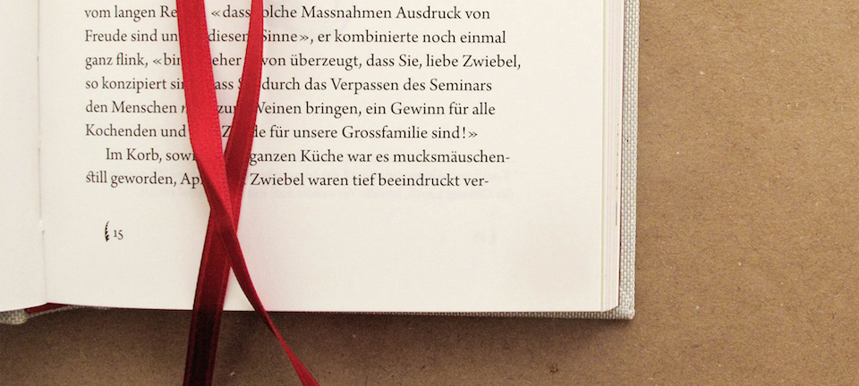
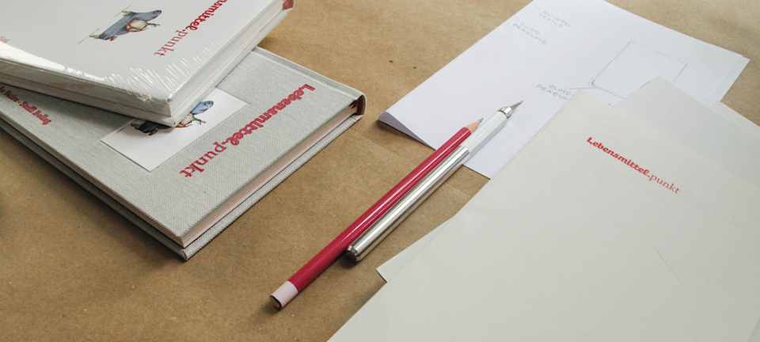

Lebensmittel.punkt
Eine kulinarische Satire von Steffi Bollag
- 
- 
-

- 
- 
Dein Essen, das unbekannte Wesen, greift zum Stift ...
... und die Welt ist weiterhin voll von Geschichten, die die Lebensmittel schreiben.
Über das Buch
Warum wurde die
Zwiebel therapiert?
Filmchen & Bildchen
3-teiliger Ein-Blick?
Die Autorin
Über Steffi Bollag
Kontakt & Bestellung
Noch Fragen offen?
Über Lebensmittel.punkt
Aus drei Teilen besteht dieses Buch, das Lebensmittel zum Lebensmittelpunkt macht: Zum einen: BROT-Agonisten und ihre ESS-Kapaden, zum anderen aus unblutigen Küchenkrimis und zuletzt aus einem entlarvenden «Schüssel»-Roman.
Da sucht Getreide in einem Ethno-Workshop seine Wurzeln, kranke Aubergines kuren gemeinsam mit Brokkoli und lernen dabei, wie komplex der grosse Gemüsekosmos ist. Im Krimi wird ein Mongolensalat der Tat verdächtigt und im «BocHüs zur Abendsonne», dem Altenheim für aus der Mode gekommene Speisen bedroht das Tiramisu die Crêpe Suzette vor allen andern «Ess-Wesen» im Heim!
Diese Geschichten-Sammlung, die als kulinarische Satire mit kriminalistischem Einschlag bezeichnet werden kann, stellt eine komplett neue Form der Erzähl-Optik dar.
Filmchen & Bildchen
{kind=link}
{kind=link}
{kind=link}
{kind=link}
{kind=link}
{kind=link}
{kind=link}
{kind=link}
{kind=link}
{kind=link}
Schau rein!
Die Autorin
Steffi Bollag
Geschäftsführerin und Autorin
1957 in Basel geboren, dort auch Besuch der Schulen; Ausbildung zur Pflegefachfrau und anschliessend auch zur Hebamme, dazwischen Reisen nach Israel, USA und Afrika (Kapverdische Inseln/Senegal), teilweise mit längeren Aufenthalten.
Anschliessend Arbeit in verschiedenen Spitälern der deutschen Schweiz, teilweise in leitender Funktion. Später Übersiedlung nach Wien, der Stadt, aus der meine Mutter stammt und die von meiner Familie und mir regelmässig besucht wurde. Deshalb habe ich eine enge Beziehung zu Wien.
Dort machte ich beruflich fast alles (italienisch sprechende Fremdenführerin, Sekretärin, Privatpflege, Mitarbeiterin in einem Kindergarten und vieles mehr), zuletzt als feste Mitarbeiterin (Wien-Korrespondentin) der Wochenzeitung Israelitisches Wochenblatt in Zürich; nach Rückkehr in die Schweiz im Jahre 2000 dort Redaktorin, bis das Blatt 2001 im Produkt «Tachles» aufgeht.
Dazwischen in den neunziger Jahren, war ich fünf Jahre lang Leiterin des Jüdischen Altenheimes in München (1993–1998). Ab 2001 in Basel mit Schwerpunkt «Alterspolitik» tätig, zuerst als Mitarbeiterin für das Amt für Alterspflege, anschliessend seit 2008 erneut Leiterin eines Altenheimes, des Humanitas in Riehen, dem Ort, wo ich auch aufgewachsen bin.
Daneben habe ich immer wieder eigene Texte verfasst – eine Art berufsmässiges Hobby. Literatur gehört auch sonst zu meinen Interessensschwerpunkten.